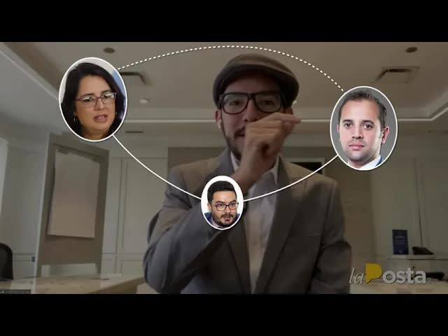
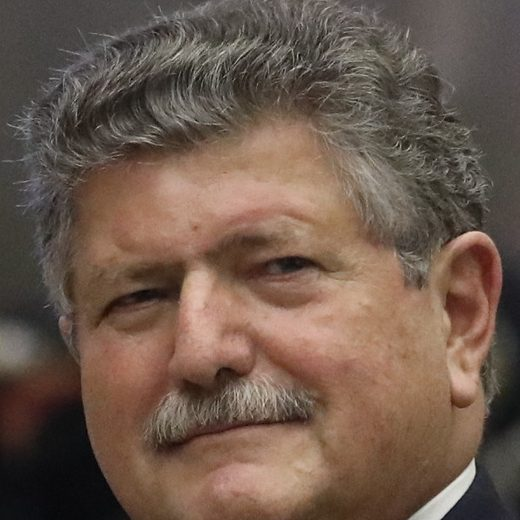
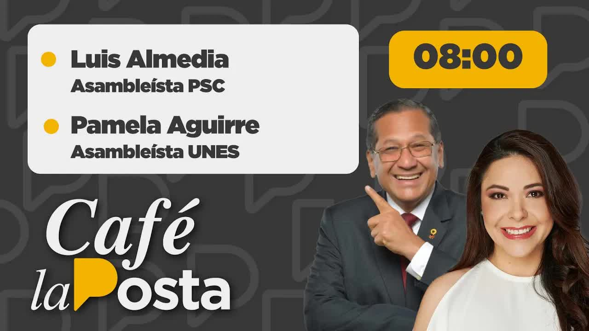
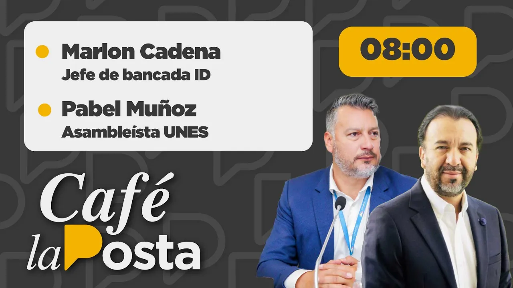
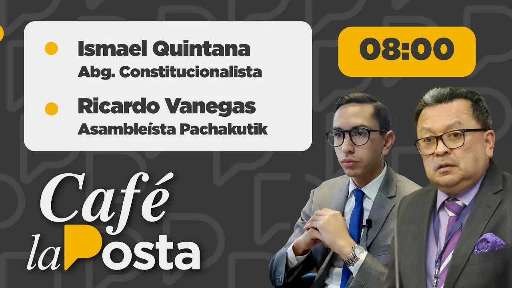
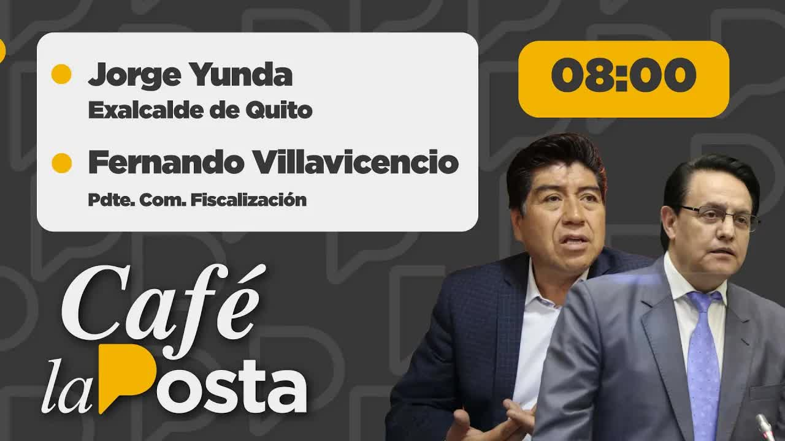
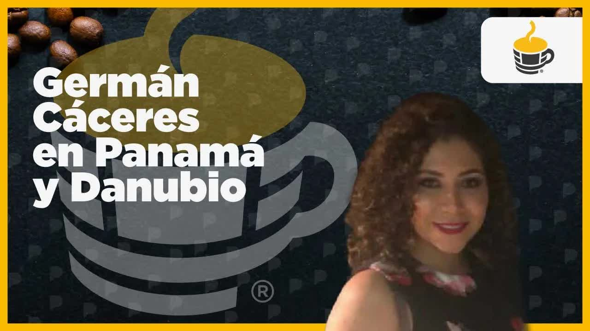
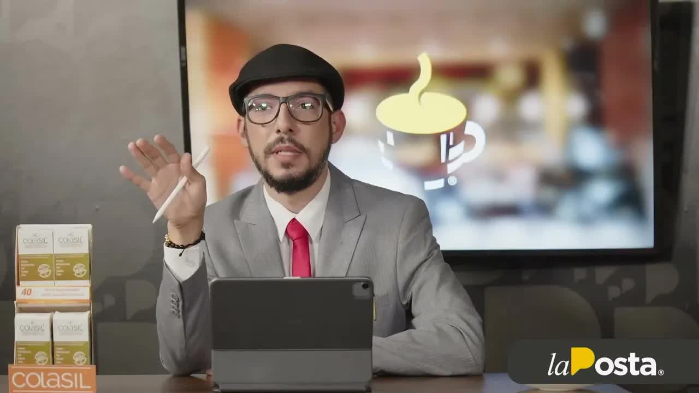

Aug 11, 2022 · Pozo's hand in the customs network
In September 2021, someone approached the right-hand woman of Ecuador's customs director at a Guayaquil shopping mall and offered her three million dollars for a post. The director herself called the attorney general. The Attorney General's Office (Fiscalía) wiretapped the calls and in July 2022 arrested eight people. The case was named Danubio. La Posta obtained the case file, reported what had not been published and took a thesis to the National Assembly: the post that controls the shipping containers is the post drug trafficking pays for.
To understand why someone would pay three million for a public post, you have to understand what that post does. The deputy director general of operations of the National Customs Service, Senae, controls the yards, the physical inspections and the scanners at the ports: he decides which container is opened and which one goes through. For an importer evading taxes, that is worth a lot. For someone exporting cocaine hidden in bananas, it is worth more. Since 2021, Ecuador has been the main departure point for cocaine bound for Europe, almost all of it in shipping containers.
In September 2021, Juan José Aucancela, an Indigenous leader from Chimborazo and a CREO party activist who had organized support for Lasso's campaign, approached María Antonieta Reyes, the right-hand woman of Senae director Carola Ríos, at a Guayaquil shopping mall and offered her three million dollars to have Sergio Peña, a lawyer, appointed deputy director general of operations. According to Attorney General Diana Salazar, it was Ríos herself who called her to report it; the case file also records a call to the 1800-DELITO hotline and a report signed by Reyes, who was later fired. On October 14, 2021, Aucancela and Jhon Salas entered Carondelet, the presidential palace, through the main security checkpoint and spent an hour at the Secretariat of the Administration, headed by Iván Correa. The Attorney General's Office wiretapped the suspects' calls for months. On February 15, 2022, Pons tells Richard García that the day before he had been with the president and told him about the process, and that everything was being coordinated with Guido Chiriboga and Iván Correa. On the night of July 21, 2022, the Attorney General's Office carried out raids in four provinces, including Pons's home, and at six in the morning on the 22nd it brought charges of criminal association against eight detainees: Aucancela, Peña, the operator Marcos Leiva, Richard García, known as el Gordo García, Jhon Salas, Víctor Tonato, who collected the résumés, Marcos Reyes and Henry Cabrera. The judge ordered them to report periodically and barred them from leaving the country, rather than pretrial detention. Names of people who were not charged came up in the calls: Juan José Pons, Lasso's former honorary adviser, and his son; CREO's president, Guido Chiriboga; the secretary of the Administration, Iván Correa; the government minister, Francisco Jiménez; and Danilo Carrera, the president's brother-in-law, who according to the Attorney General's Office wrote that the customs director post was handled by number one. The case was named Danubio.
Controls the yards, the inspections and the scanners
Juan José Aucancela, on behalf of Sergio Peña85 percent of Senae's organizational chart, according to Salas; recouped by exporting flour
Jhon Salas to Carlos Luna, in a wiretapped callFive days later the network was talking about the future minister
Mentioned in an audio recording from the networkBetween 8,000 and 12,000 per post, according to the calls
Jhon SalasFifty thousand as a deposit, for sixty days, according to the transcript
Pons Junior to an applicantSmaller contributions recorded in the case
Víctor Limones and othersLa Posta had been receiving reports for months that something was going on in customs; on July 25, 2022, with Pons's name already public, it devoted its first program to the case. On August 1 it launched a daily segment: the unpublished side of the Danubio case. That day it interviewed Ítalo Cedeño, general manager of Petroecuador, about corruption at the oil company; Boscán explained the four types of customs inspection and why the deputy manager of operations decides which container is opened, and Doménica Vivanco, who had copied by hand the case file of some 30 volumes, presented the unpublished material. That weekend, people linked to drug trafficking asked Boscán why they were asking questions about customs. The Attorney General's Office had not wiretapped Pons, Chiriboga or Correa; to listen in on Chiriboga, an assembly member, and Correa, who held ministerial rank, it would have needed authorization from the National Court of Justice because of their legal immunity.
On August 4, assembly members Luis Almeida and Geraldine Weber filed a complaint against Carola Ríos for illegally practicing a profession and usurping functions: the undergraduate degree under which she worked was, according to them, a technical certificate from a Chilean foundation dated 1994, registered with Senescyt four months after Lasso appointed her on May 24, 2021. The next day Almeida said on Café La Posta that the problem was not the degree but who controlled the scanners, this container gets inspected, this one doesn't, and that the customs police themselves estimated a billion dollars had been waived. On August 8, La Posta expanded on the case. On the 11th it published a seven-minute video, Pozo's hand in the customs network.

This was the thesis. Fabián Pozo, legal secretary to the presidency, had suggested Carola Ríos's name to run customs; Ríos had worked for the Eljuri group and had ties to Cuenca's big importers. Pozo was still a shareholder in a law firm devoted to customs matters, whose other partner, Francisco Gottifredi, filed customs briefs under his own name, acted as an outside adviser to the customs service and, according to La Posta's sources, went there two or three times a week to give instructions. Gottifredi, a private citizen, sat in on an official meeting between Senae and U.S. Embassy officials; it was the embassy that asked the government what a private individual was doing there, and the government replied that he was its outside adviser. The embassy, asked by La Posta, said it does not comment on the details of working meetings. Below Ríos was the post people were paying for: the deputy directorate of operations, which Ríos did not want to lose. It was her right-hand woman who reported it. And the vice president of the Oversight Committee who made the first request for information was Ana Belén Cordero, Pozo's wife. In the case file, three people said they had spoken with Guido Chiriboga about posts in customs.
I am not accusing you of being ignorant, quite the opposite. I am accusing you of being a professional who is acting unethically, knowing that your partner is the legal secretary of the Presidency and that your partner put the director of Senae in place.
Andersson Boscán on Francisco Gottifredi, August 11, 2022
On August 16, the full National Assembly voted, 92 in favor, to investigate Carola Ríos's appointment. On August 19, 2022, Andersson Boscán testified before the Oversight Committee, chaired by Fernando Villavicencio, alongside Attorney General Diana Salazar, to speak about the criminal association inside Senae. He laid out the structure of Danubio as La Posta had been revealing it every morning: the prices of the posts, Pozo's hand in Ríos's appointment, Gottifredi exercising unofficial influence. He said Ríos had kept the ports and airports without scanners for a year and a half, with the five or six scanners donated by a Chinese company left abandoned without maintenance, and that the two main importing groups always went through automatic clearance. He showed a chart of relationships in which Xavier Jordán and Leandro Norero appeared as heads of a corruption network in customs; Villavicencio said it came from customs intelligence and that he himself had given it to Ríos eight months earlier; the attorney general said she was not familiar with it. And he named Danilo Carrera, the president's brother-in-law, Rubén Cherres and Hernán Luque, five months before El Gran Padrino. Salazar replied that without evidence she could do nothing and that the rest was under seal; according to Boscán, the president got angry with the attorney general that day and their relationship remained tense.
What La Posta reported first was gradually confirmed. On August 17, Boscán revealed that in the technical wiretap room there were recordings whose volume was turned down so the system would not transcribe them, among them those of Chiriboga and the Pons, and that a raid was thwarted because minister Patricio Carrillo said the police officers were busy in Guayaquil. In October, the transcripts of the Pons calls appeared in the case file from page 63,000 onward: the case grew from 10,000 pages in July to almost 80,000, 69 volumes, in October. In August Pons gave a half-page statement in which he denied everything; the prosecutor did not ask him a single question. The Committee summoned him three times and he never showed up; neither did Fabián Pozo, Aparicio Caicedo, Pons Junior, Gottifredi, nor Carola Ríos the first time. Ana Belén Cordero recused herself from everything related to Danubio. Danilo Carrera, summoned by the Attorney General's Office, also failed to appear at the first appointments.

Plan V criticized the testimony: unsourced conjecture, information overheard in hallways, a chart of unknown origin. Boscán replied that those were the things he went to the Assembly to say and that some had the indecency to call exaggeration. On August 22, Villavicencio came on Café La Posta to follow up on the case. On October 18 and 19, La Posta published the transcripts of the wiretapped calls of the Pons and the network's operators. On October 20, 2022, the pretrial investigation was closed, with 428 investigative steps and 114 prosecutorial motions.
Eight months ago, when they invited us to testify about the Danubio case, we already named Danilo Carrera, Rubén Cherres, Hernán Luque, drug trafficking taking over customs. And what did they oversee?
Andersson Boscán, April 18, 2023, explaining why he would not go back to the Committee
Danubio produced only one conviction. Víctor Limones, a business engineer, accepted a plea agreement, and on January 24, 2023, Judge Nelly Parrales sentenced him to one year in prison for criminal association: the calls mentioned contributions of 300 dollars for posts with salaries of 2,500 to 3,000. The other eight were sent to trial. The hearing was first set for November 9, 2023, and has been suspended eight times: November 2023, May and September 2024, and the ones after that. In February 2026, Judge Keltthya López set the ninth attempt for March 18 and 25, 2026, and warned that she would not allow any more suspensions. The possible sentence is up to five years. Primicias revealed that Peña's network had allegedly fabricated fake proof of funds to offer the bribes.
On October 18, 2022, La Posta read out the transcripts the technical wiretap room had made of the calls between Juan José Pons and his son, Juan José Pons Junior: contracts and payments, fifteen sticks, fifteen million; Pons Junior arranged meetings with Energy Minister Xavier Vera and with Hernán Luque, manager of the state-owned companies, in the Ministry of the Coast building, and asked that they be seen moving so that the others would pay the other fifteen; investigators believed it was the commission on a payment to a supplier. Vera and Luque did not respond. There were also the conversations in which Pons told Richard García, el Gordo García, his operator, whom to invite to a meeting to discuss the matter of the posts, which according to Pons was not moving. A community leader from Santa Elena said that after Lasso took office, Pons asked them for résumés for public posts in the province. On October 19, the chats of Aucancela, Tonato, Salas and Luna: on April 29, 2022, they were talking about a candidate for the Agriculture Ministry, twelve goes inside, you have to ask for fifteen or twenty; five days later Bernardo Manzano was appointed minister. Pons denied any involvement: he said he only knew García, a community leader who organized grassroots groups in various provinces, and had for more than fifteen years. Pons Junior said he had only known García since 2013 and that he talked politics with Peña.
Sergio Peña, the key figure, was elected assembly member for the Citizen Revolution in 2023 and was later expelled from the Correísta movement. Carola Ríos remained at the head of Senae; she was still there in April 2023; she was never charged. Neither was Fabián Pozo. Juan José Pons gave a half-page statement and never appeared before the Committee. Iván Correa left Carondelet on February 9, 2023, the day after La Posta published the organizational chart of the structure. Boscán returned to the Oversight Committee in February 2023 to present El Gran Padrino, with 35,000 documents, and in April 2023 announced he would not go a fourth time: the Attorney General's Office had eight investigations open based on his contributions, for criminal association, organized crime, bribery, extortion by public officials, embezzlement and influence peddling, and the Committee, with Ana Belén Cordero implicated, had not looked into anything he brought them about customs. Villavicencio, he said, admitted to having shelved the report on the Albanian mafia.
Customs remained at the center. In 2023 Danubio intersected with El Gran Padrino and the Albanian mafia: the structure that was asking fifteen million for the airport cargo zone, according to Boscán, was the same one the police had mapped in the León de Troya report. Villavicencio was assassinated on August 9, 2023. Norero was murdered in Latacunga prison on October 3, 2022, two weeks before the Danubio pretrial investigation closed.
Updated September 5, 2026
Lasso appoints her customs director.
Aucancela offers three million to Carola Ríos's right-hand woman. Ríos calls the attorney general. The wiretaps begin.
Aucancela and Salas enter Iván Correa's Secretariat of the Administration.
Pons says he was with Lasso and is coordinating with Chiriboga and Correa.
The network talks about the future minister; five days later Manzano is appointed.
Raids in four provinces. Aucancela, Peña, Leiva, García, Salas, Tonato, Reyes and Cabrera charged, without pretrial detention.
The Juan José Pons case on Café La Posta.
Daily segment with the case file. Interview with Ítalo Cedeño, manager of Petroecuador.
Almeida and Weber question her degree and the scanners.
Gottifredi at the meeting with the U.S. Embassy.
92 votes to investigate Carola Ríos's appointment.
Boscán before the Oversight Committee, alongside Attorney General Salazar.
In Latacunga prison.
The wiretapped calls of the Pons and the operators; Agriculture and the airport.
428 investigative steps.
Víctor Limones, one year, plea agreement.
One day after La Posta published the organizational chart of the structure.
Boscán returns to the Committee with 35,000 documents.
It is suspended. Seven more will follow.
Over the chats with Norero published in Metástasis.
Judge López warns there will be no more suspensions.
The candidate for the three-million-dollar post. Later a Correísta assembly member, expelled from the movement.
Indigenous leader from Chimborazo and CREO activist who made the offer, according to the complaint.
Senae director since May 2021, a former employee of the Eljuri group. She reported the offer to the attorney general; she herself was questioned over her degree and the scanners.
Legal secretary to the presidency. He suggested Ríos; partner in a customs law firm.

Former president of Congress and Lasso's former honorary adviser. His name appears in the wiretapped calls. He was not called to testify.
Business engineer. The only one convicted, one year.
Carola Ríos's right-hand woman. She received the offer and signed the report.
President of CREO. Three people in the case file say they spoke with him about posts in customs.
Secretary of the Administration. Aucancela and Salas entered his office in October 2021.

The president's brother-in-law. According to the Attorney General's Office, he wrote about the customs director post.
Photos via Wikimedia Commons. Juan José Pons: National Assembly of Ecuador (CC BY-SA 2.0); Danilo Carrera: National Assembly of Ecuador (CC BY-SA 2.0).
The U.S. government meets regularly with all its partners, including Senae. The embassy does not comment on the details of working meetings with its counterparts.
The assembly member swore he had never asked for money or any favor in exchange for his help and asked the Attorney General's Office to keep going until it found those responsible.
It described Boscán's testimony as conjecture and narco-theories without cited sources.
It opened an inquiry into Boscán over his chats with Norero and said they showed a closeness that went beyond journalism. Boscán: Norero was a source and his questions were limited to administrative corruption.
In a statement it clarified that there had been no handing out of posts by authorities and called for an investigation. Security Secretary Diego Ordóñez: there is no evidence about the president's circle; the government is made up of honest people. A communications adviser sent a letter calling La Posta a liar.
The Attorney General's Office has been investigating for ten months and I have not been charged or accused.
He only knows Richard García, since 2013; his conversations with Sergio Peña were political in nature.
Anyone can file a complaint, but without evidence she can do nothing; the rest is under seal.







high definition with facial recognition and license plate readers we have been and continue providing more tools to keep protecting guayaquil because your safety comes first city of guayaquil to ah are you ready to start your career because you know that to reach your goals and overcome your challenges you need to be a professional are you ready to take on your future because only the excellence that is achie…
Read the full transcriptfacial recognition and license plate readers we have been and continue providing more tools to keep protecting Guayaquil because your safety comes first city of Guayaquil are you ready to start your career because you know that to reach your goals and overcome your challenges you need to be a professional are you ready to take on your future because only the excellence that is achieved through sacrifice wi…
Read the full transcriptlicense plates we have been and continue providing more tools to keep protecting Guayaquil because your safety comes first city of Guayaquil are you ready to start your career because you know that to reach your goals and overcome your challenges you need to be a professional are you ready to take on your future because only the excellence that is achieved through sacrifice will bring your growth at ecotec we give you the…
Read the full transcriptlicense plate readers we have been and continue providing more tools to keep protecting guayaquil because your safety comes first city of guayaquil are you ready to start your career because you know that to reach your goals and overcome your challenges you need to be a professional are you ready to take on your future because only the excellence that is achieved through sacrifice will bring your growth at ec…
Read the full transcriptthere has been an internal competition in water although still husband suggested the name of a person to be director of the honey waters carola feels to health ana worked before for the cover group has big relationships with other importing groups and well and the government says let's see we need advisers and honors people as they call them outside advisers to the person who ends up in the unit of a lot …
Read the full transcriptwe have been and continue providing more tools to keep protecting guayaquil because your safety comes first city of guayaquil are you ready to start your career because you know that to reach your goals and overcome your challenges you need to be a professional are you ready to take on your future because only the excellence that is achieved through sacrifice will bring your growth at ecotec we give you the best to…
Read the full transcriptlicense plates we have been and continue providing more tools to keep protecting Guayaquil because your safety comes first city of Guayaquil are you ready to start your career because you know that to reach your goals and overcome your challenges you need to be a professional are you ready to raise your future because only the excellence that is achieved through sacrifice will bring your growth at ecotec we give you the …
Read the full transcripta good security film can save your life family trips will no longer be uncomfortable a standard car never again Falcón arrives in Quito security luxury and comfort at the highest level we have been leaders in automotive equipment for 18 years security films leather upholstery nano-ceramic interior restoration and much more visit our showrooms with unique and personalized stores nationwide in Qui…
Read the full transcripta good security film can save your life family trips will no longer be uncomfortable a standard car never again Falcón arrives in Quito security at the highest level we have been leaders in automotive equipment for 18 years security films leather upholstery nano-ceramic interior restoration and much more visit our showrooms with unique and personalized stores nationwide in Quito Ambato and riobamb…
Read the full transcriptcriminal structure in your government mr. president what there is is this the organizational chart of the criminal structure presented by la posta in red you have those who are through the roof like Rubén Leonardo Cortázar Roberto well like Jorge orbe like Julio León like Hernán Luca whom the president promised to drag back by the scruff of the neck in blue the ones who were fired like Javier Vera like Mauricio Kim who fighting attorney general's office like Iván Corre…
Read the full transcripttestify about the danubio case we already named Danilo Carrera Rubén cherres Hernán Luque drug trafficking taking over customs so with mr. norero And what did they oversee excuse me did you hear the oversight condition oversee the then partner of the minister who controlled customs did you hear the doctor What's her name the vice president Ana Belén Cordero directly implicated interes…
Read the full transcriptTranscripts from each show's automatic captions. They have not been corrected by hand: use them to find a phrase and jump to the exact minute in the video, not as verbatim quotes.
Limones accepted a plea agreement. The rest are awaiting trial.
The main trial has not opened.
The Energy Minister's recordings
2024The cartel's legal businesses and the Attorney General's Office that did nothing
2021The generals who shut down León de Troya and the commander the drug traffickers called the godmother
The videos are the original Café La Posta programs, hosted on this site. Third-party quotes are reproduced as they were published.